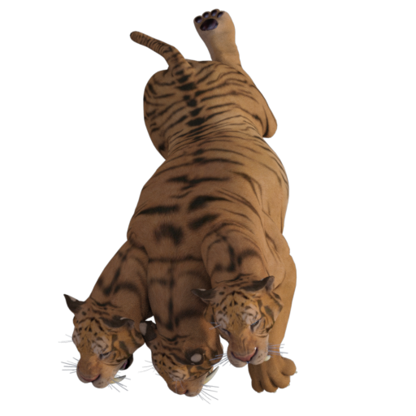

Token Tuesday: Big Cats 1
Today on Token Tuesday (A day late, I'm sorry), Emily Smirle has served up for you our first (of 2) Big Cat packs. Inside is the traditional tiger and the more unconventional DFPRG monster the triger (a three headed tiger).

Big Cats 1 tokens by Emily Smirle, licensed under Creative Commons BY-NC-SA 4.0.